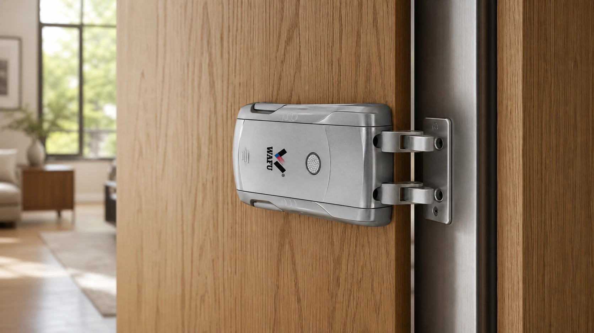
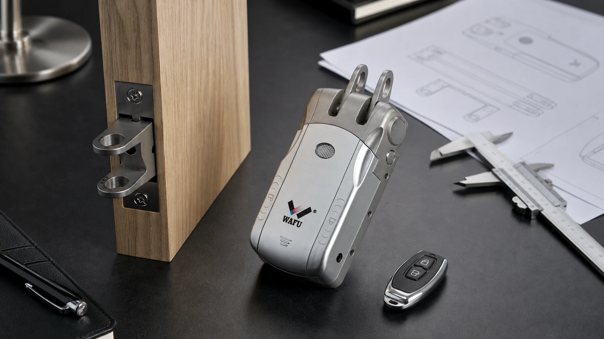

This B2B guide helps procurement, engineering and installation teams define the evidence needed before approving an invisible smart-lock retrofit.
A retrofit is not validated by a front-door photograph or a statement that a lock is “universal”. Door thickness, the existing lock case, edge space, power, emergency access and installation responsibility must be checked together.

1. Separate new doors, existing doors and partial renovation
New doors can reserve space for the lock body and cable route at the factory. Existing doors are constrained by old holes, edge strength and the installation window. Partial renovation also adds finish matching, resident access and batch delivery. These conditions should not be mixed into one quotation.
2. A survey needs more than one front photograph
Record both sides of the door, the edge, frame strike, existing lock, cut-outs, thickness, edge width, backset, handle position and handing. Number materially different door types separately. The survey should distinguish “fits”, “requires modification” and “to be confirmed”.
| Survey item | Record | Why it matters |
|---|---|---|
| Door and frame | Material, thickness, handing, deformation and reinforcement | Lock position, strike fit and installation method |
| Existing lock | Body size, bolt path, holes and cover area | Repair, adapter or replacement scope |
| Use and handover | Traffic, environment, power and responsible party | Maintenance, emergency access and acceptance |
3. Existing lock bodies and cut-outs cause most rework
Do not check only whether a face plate hides an old hole. Lock-body depth, bolt position, spindle height, frame strike and remaining edge strength affect the replacement. Measure a representative lock when drawings are unavailable; repeated guessing from photographs is rarely reliable.

4. Discuss power, remote control and emergency access with installation
Confirm battery maintenance, remote-control assignment, lost-device handling and the person responsible for low-battery or authorization failures. For multi-batch projects, record door number, sample version, remote number and backup opening method in the handover file.
5. Use WF-010, WF-019 and WF-026 as sample options
WF-010 can start standard concealed-installation discussions; WF-019 can support projects prioritizing keyless appearance and authorization experience; WF-026 can be evaluated where structural redundancy and a higher security margin matter. Final configuration, finish, opening method and lead time must be confirmed by sample and written specification.
6. Validate the sample and brief the installation team
Test repeated opening, bolt and strike alignment, closing feel, authorization, emergency opening and commissioning by the actual installer. Before batch work, freeze the approved model, accessories, door mapping, installation steps, stop-work conditions and escalation contact.
7. Pre-quotation checklist
- Door type, thickness, handing and edge clearance measured?
- Existing lock, holes and strike documented?
- Power, remote control and emergency path assigned?
- Each materially different door profile represented by a sample?
- Approved configuration, installation and change-control records prepared?
Request a project review
Share your door type, target market, quantity and delivery plan. WAFU can help prepare a sample and procurement checklist.
Frequently asked questions
Can a photograph confirm compatibility?
No. Door thickness, edge, existing lock, cut-outs and emergency access must be checked and confirmed with a representative sample.
Should a first order include all three models?
Only when each model has a defined customer, door condition and support plan. A smaller validated assortment is usually easier to sell and service.